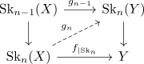

cellular approximation via blakers massey and obstruction theory
Proposition
Let $X,Y$ be anima and $\mathrm{Sk}_n(X), \mathrm{Sk}_n(Y)$ cw structures of an anima. Let $f: X \rightarrow Y$ be a map.
Then there exist inductively lifts

Proof
absolute version
induction basis
- solve $n = 0$ lift per hand
induction step
Then use fundamental application of obstruction theory:
Here the cofiber of $\mathrm{Sk}_{n-1}(X) \rightarrow \mathrm{Sk}_n(X)$ is given by some $\bigvee S^n$ or $\coprod S^n$. Furthermore the fiber of $\mathrm{Sk}_{n-1}$ is \(n-1\)-connected. So the only homotopy group, which is possibly nontrivial, is given by
this uses simple maps $\mathrm{Sk}_{n-1}(X) \rightarrow \mathrm{Sk}_n(X)$
- should also work if one does obstruction theory via local coefficients ?